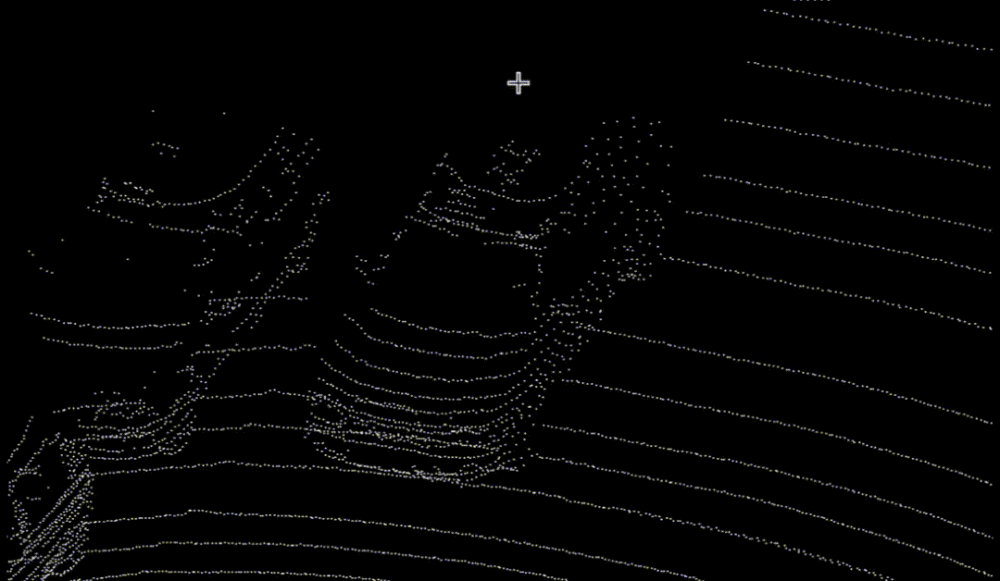
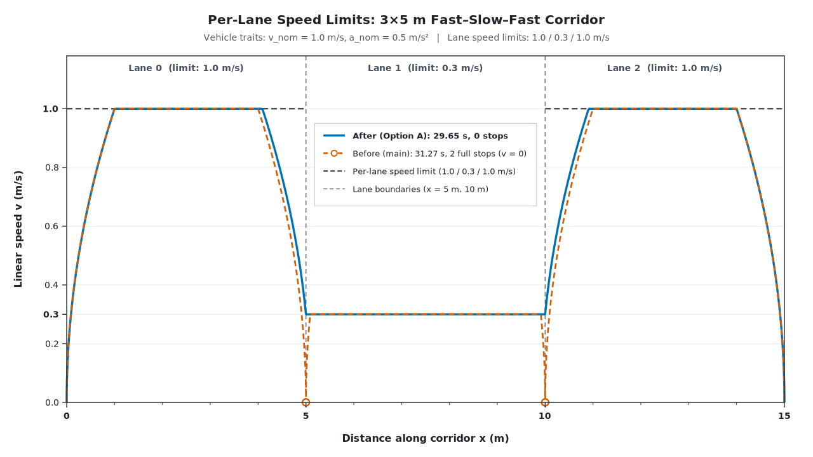

Overview
Software engineer with 8+ years of experience building backend infrastructure for autonomous systems, robotics, and computer vision. At Wing (Alphabet), I work on the human-in-the-loop layer of autonomous drone delivery: the safety-critical backend that lets operators supervise and command autonomous aircraft.
Recently rebuilt a multi-drone delivery PoC into a physics simulation where Gemini perceives and plans, deterministic checks decide what may fly, and failures escalate to a human. Previously led ML-assisted, human-verified 3D point-cloud annotation systems adopted by 20+ autonomous-vehicle and robotics customers.
Impact at a Glance
10×
Aircraft per operator
FAA-approved; main backend engineer for oversight
0
Safety violations
across 300 adversarial plans + 360 benchmark runs (simulation)
20+
AV / robotics customers
on 3D annotation platform
56%
Lower labeling cost
through workflow analytics
Selected Projects
01
Autonomous Aviation Infrastructure
WingBackend for the human-in-the-loop layer of Wing’s drone delivery — the “Google Maps for the sky” where operators handle only the exceptions.
Problem
Every flight must pass spatial, temporal, and regulatory checks, while one operator safely oversees many aircraft.
Managing by exception
My Role
Main backend engineer for OpenSky’s operator oversight system.
Technical Work
- Translated FAA rules (Part 107, LAANC, Class E2) into backend rule types and license validation.
- Built S2 Geometry validators for 4D (3D + time) airspace volumes.
- Designed a surface Class E2 advisory rule backed by an offline Flume precompute (diagram below).
- Owned the pilot License service: per-country license types, staged config rollout, and the team’s onboarding guide.
- Built PoC LLM operator tools where the model proposes and deterministic checks plus humans decide: 4D flight-restriction drafting and a read-only on-call triage assistant (InterUSS / ASTM F3548 alerts).
Surface Class E2 check: heavy work offline, cheap check online
Offline
Online, per flight
Impact
- 10× increase in aircraft per operator unlocked under FAA approval by shifting to management by exception.
- Led an end-to-end prober for the emergency-landing path on virtual aircraft in pre-production, plus the on-call playbook.
- Shipped transactional on-duty coverage to 100% of production, a dual-write Spanner migration with no maintenance window, and a metrics-gated legacy API turndown.
Emergency-landing prober on virtual aircraft (pre-production)
02
TAnGY: Gemini-Planned Multi-Drone Delivery in Simulation
WingPhysics-simulated multi-drone delivery coordinator (PoC) — Gemini proposes plans, deterministic code decides what may fly, and failures escalate to a human whose replies pass the same checks.
Original PoC demo (Three.js + Flask), before the MuJoCo rebuild
Problem
Vision-language models (VLMs) and large language models (LLMs) can translate open-ended mission descriptions into multi-drone task plans, but in a safety-critical airspace setting, a hallucinated or unsafe plan must never reach flight execution.
My Role
Co-built the original PoC (Three.js + Flask); independently rebuilt it end to end in MuJoCo with quadrotor physics, pixel-based perception, a deterministic Simplex safety layer, and an automated evaluation benchmark.
Every model stage is benchmarked against an oracle baseline.
Technical Work
- Perception from pixels: Gemini Robotics-ER points at objects in simulated RGB-D camera frames; points are back-projected with depth and tracked via a Kalman filter with Hungarian association (recall 0.80–0.82 at precision 0.95–0.96).
- Robustness: across three seeded scene layouts, VLM-grounded planning succeeded on 29 of 30 runs; with walking bystanders, live Gemini runs succeeded 18 of 18 with 0 violations; under random mid-cruise gusts, 120 runs had 0 geofence, no-fly, or separation violations.
- Flight control & onboard monitor: geometric SE(3) controller settles a 1 m step in 1.6 s and holds hover within 1 cm under a 2 N side wind; an independent onboard monitor runs every tick to land the drone without relying on cloud connectivity.
- (Original PoC) Text descriptions generate custom 3D test scenes; commands, reasoning, actions, and feedback are logged as episodes for a reinforcement-learning dataset.
Robotics VLM vs. general-purpose model (same 24 simulated frames, five-class detection)
Recall
Precision
Frame-budget timeouts
Simple planning tasks did not separate the two models.
Simplex ablation under live Gemini planning (30 runs per arm)
All safety layers on
Plan validator Onboard monitor
0 / 30 violations
Plan validator off
Plan validator Onboard monitor
Onboard monitor braked every unsafe flight
Both layers off
Plan validator Onboard monitor
4 / 30 entered a no-fly zone or left the geofence
All violations came from refusal tasks, so this shows what each layer catches, not how often plans are unsafe.
Impact
- 0 safety violations across 300 adversarial plans, 8 adversarial physics episodes, and 360 benchmark runs.
- 20/20 end-to-end simulated missions (live Gemini calls) delivered the payload to the right target.
Scene-grounded Gemini Robotics-ER planning (10-task suite, 3 runs per task)
Class labels only
+ annotated scout image (own drones masked, targets described by color)
03
Safety-Critical Configuration & Authorization
WingAuthorization for human-in-the-loop operations — re-architected access control so every RPC, including emergency landing, checks who may issue it, moving from database-persisted roles mirrored into an ACL service to config-driven RBAC.
Problem
Per-org roles lived in the database and synced asynchronously into a Zanzibar-based ACL service, so they could drift; adding a role meant handler changes, a backfill, and a re-sync, without interrupting live airspace operations.
Before
After
+
My Role
Eng lead and co-author of the redesign; led the role-configuration schema, validation, and phased migration plan.
Technical Work
- Decomposed the monolith into three services: Organization, User, and Member License Management.
- Replaced per-organization database roles with a global, schema-validated configuration mapping roles to permissions, with per-RPC permission annotations.
- Implemented deny-by-default per-RPC permission checks (one keyed Spanner membership read plus an in-memory lookup), including safety-critical commands such as pilot-issued emergency landing, shipping configuration before code.
Impact
- Retired the database-to-ACL sync dependency across live safety-critical services via a flag-guarded, multi-quarter migration.
- Turned adding or updating a role into a reviewed configuration change instead of handler code changes, a database backfill, and an ACL re-sync.
04
3D Perception & Annotation Platform
AppenML-assisted, human-verified labeling for autonomous-vehicle and robotics perception — clustering and models pre-label 3D point clouds, annotators correct and verify; led from prototype to production.


Problem
State-of-the-art detection models needed extensive labeling, yet annotating large LiDAR scenes was slow — and heavy scenes crashed browsers.
My Role
Led full-stack development (React/Three.js frontend, Flask/Spring backend) and drove ML-assisted annotation from prototype to production.
Technical Work
- Click-to-annotate: fast DBSCAN clustering on k-d trees auto-generates bounding boxes.
- GPU shaders for point coloring plus octree frustum culling: smooth rendering from 1M to 10M+ points.
- Semantic segmentation for point-level classification; real-time AI-assisted interaction.
- Annotator-telemetry dashboards giving operations teams visibility into worker bottlenecks.
- Sensor fusion experiments: real-time projection of 3D LiDAR points into 2D camera views; multi-sensor (LiDAR, radar, camera) fusion supporting annotation accuracy.
Impact
- 20+ AV/robotics clients — flagship product born from a weekend PoC.
- 35% faster per-object annotation with one-click boxes (same-frame A/B test).
- 56% lower labeling costs through workflow analytics.
Open Source
Contributions to robotics simulation and multi-robot traffic projects. Each card links to the pull request with the code and review.
ros_gz: Clean Shutdown of the Gazebo Simulation Interfaces
GazeboProblem
The GzServer ROS 2 component initialized its simulation interfaces in a detached thread that could wait several seconds for Gazebo. Shutting the component down during that window (e.g. Ctrl+C right after startup) destroyed the interfaces while the thread was still running, so the node and the rclcpp context stayed alive until exit and the thread could touch freed memory.
Fix
Joined the thread in the destructor instead of detaching it, and added a stop flag so the waits for Gazebo end early on shutdown, plus a regression test that fails without the fix. With Ctrl+C 1–2 s after startup, the rclcpp context's use count at exit dropped from 3 to 1; normal startup is unchanged.
Why It Matters
Composable ROS 2 nodes are loaded and unloaded inside long-running containers; a thread that outlives its component leaks the context and can touch freed memory in a process that keeps running.
gz-physics MuJoCo Plugin: Nested-Model Removal
GazeboProblem
The MuJoCo physics plugin advertised entity removal, but removing a nested model by index or by name was a TODO stub that always returned false, so the call silently did nothing. Existing tests skipped this path for MuJoCo.
Fix
Implemented both the same way as top-level model removal: look up the direct child and reuse the existing removal path, which already removes grandchildren. Missing names, out-of-range indices, and already-removed models return false. A new cross-engine test fails without the fix.
Why It Matters
A silent no-op is worse than an error in simulation: the scene looks updated but still contains the model, so the physics no longer matches what the caller believes.
gz-physics MuJoCo Plugin: Reject Cross-World Constraints
GazeboProblem
Attaching a fixed joint or setting a mimic constraint accepted an endpoint from a different world. The plugin wrote that world's body or joint name into this world's MuJoCo model, so the next recompile failed and the following simulation step segfaulted.
Fix
Check that both endpoints belong to the same world before changing anything. A cross-world call now logs an error and is rejected, leaving both worlds unchanged. New tests make a cross-world call and then step both worlds; without the fix they segfault.
Why It Matters
Running several worlds in one process (e.g. parallel simulations) should fail with a clear error on invalid input, not crash the whole process.
Open-RMF rmf_traffic: Per-Lane Speed Limits
Open-RMFProblem
When collinear lanes were merged into one traversal, the whole stretch was capped at the lowest speed limit; on longer corridors the planner instead chained single-lane traversals that each start and end at rest. With three 5 m lanes limited to 1.0 / 0.3 / 1.0 m/s, the robot stopped twice and took 31.3 s.
Fix
Kept each lane's own limit and built the motion profile with a forward (acceleration) and backward (deceleration) pass, so the robot slows down before the slow lane and speeds up after it without stopping: 29.6 s with no stops. Uniform-limit traversals are unchanged and there are no public API changes; a new test scenario fails on the main branch.

Why It Matters
Fleet traffic schedules are only as good as the trajectories they are built from. At Wing I debugged cross-operator 4D deconfliction incidents on call (InterUSS / ASTM F3548); rmf_traffic's traffic schedule and conflict checks are the same class of problem.
MuJoCo: Camera Intrinsics Utility
MuJoCoProblem
Projecting 3D points into rendered images, or back-projecting depth, needs the camera's pixel intrinsic matrix, and callers had to re-derive it for each camera type.
Fix
Implemented a utility that returns the pixel intrinsic matrix for a given viewport size, consistent with what the renderer draws.
Why It Matters
Perception pipelines built on MuJoCo rendering, such as TAnGY's depth back-projection, need intrinsics that match the renderer exactly.
Credentials
- Master's and Bachelor's degrees in Computer Science, NTHU
- EB-2 National Interest Waiver (NIW) for contributions to autonomous / uncrewed systems and robotics
- Google C++ Readability